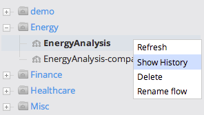
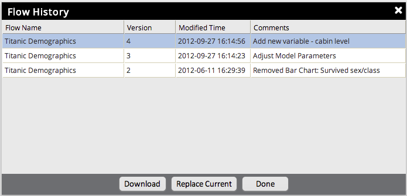

To view the history of a flow in the Workflow Explorer, right-click the flow and choose Show History. The version history will be displayed and each version can be downloaded to the local machine by selecting the flow and clicking Download. A link to save the flow will be displayed. Additionally, the user can select Replace Current to replace the current flow with the selected historical flow.

